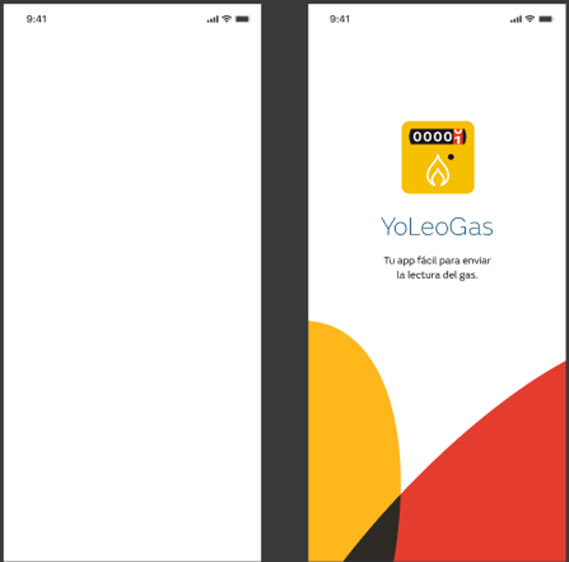
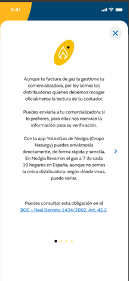
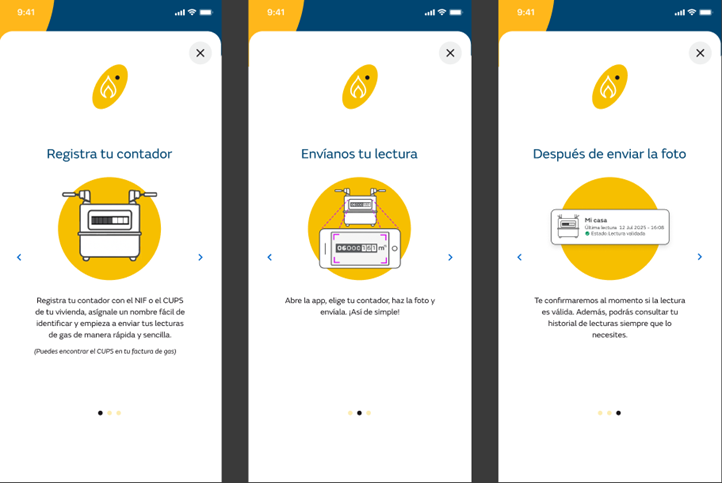

Al iniciar la aplicación se muestra una pantalla en blanco y acto seguido mientras se carga, aparece el siguiente splash de presentación:

A continuación, si es la primera vez que se accede aparece una ayuda con:
Información de la obligación de la distribuidora a recoger la lectura de contador de gas, con enlace al BOE

Información de las funcionalidades de la app

Se puede pasar de una pantalla a otra mediante la acción de “swipe” sobre la pantalla.
Las siguientes veces que el usuario entra en la app, esta ayuda ya no se muestra directamente pero es accesible desde la opción de menú de Mis contadores (ver NU_04).
Al entrar en la aplicación, siempre se llama a los siguientes servicios de backoffice:
servicio para recuperar los parámetros generales de la aplicación necesarios para el funcionamiento de la app (GET /api/Params)
este servicio recupera de la entidad CONFIGURATION del backoffice los parámetros cfg_ocrService_mobile_MinOcrConfidenceForDigit1 ..8
servicio para registrar el dispositivo en la plataforma de notiificaciones push ( POST /api/Device)